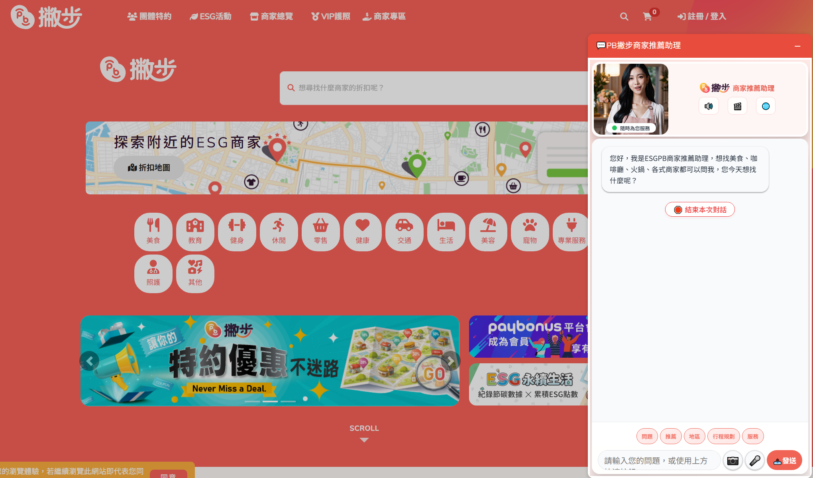
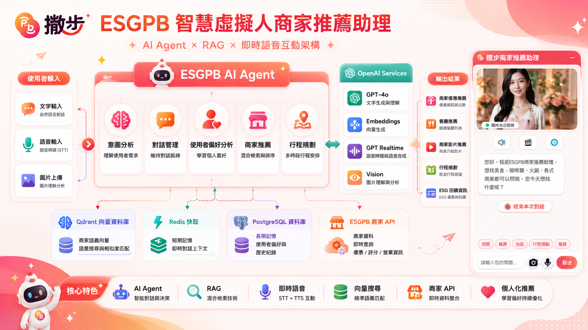
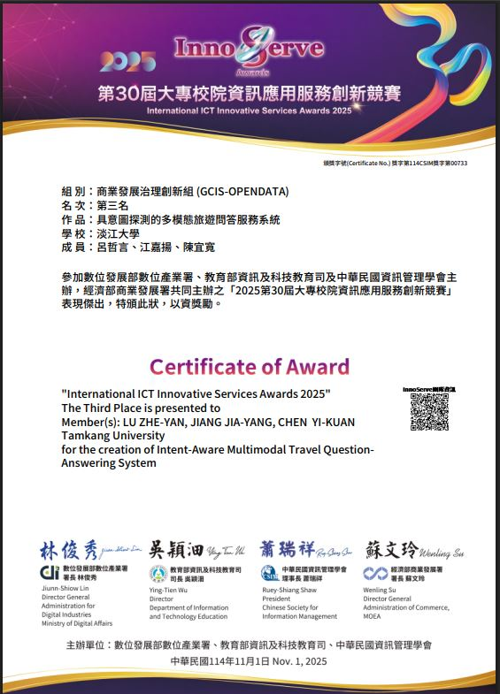
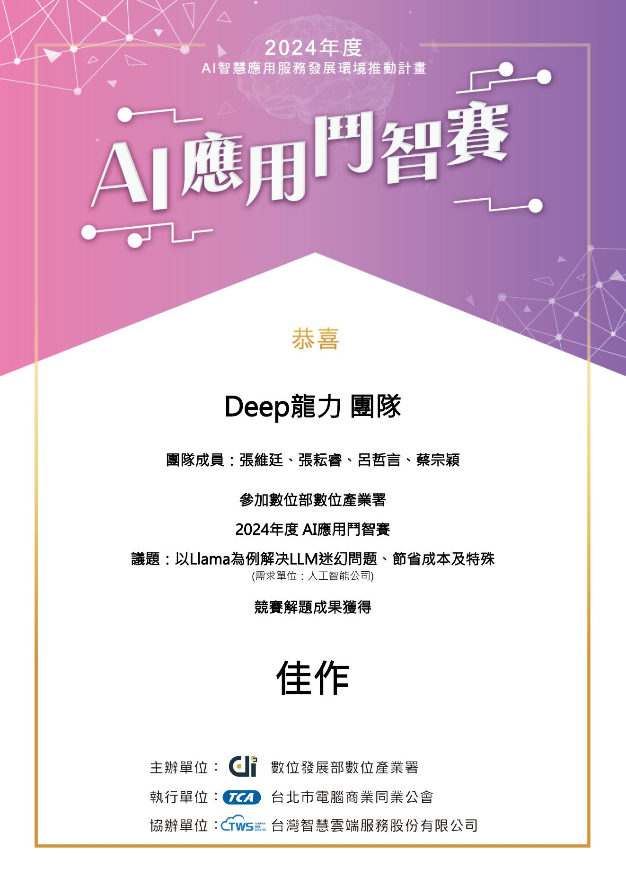
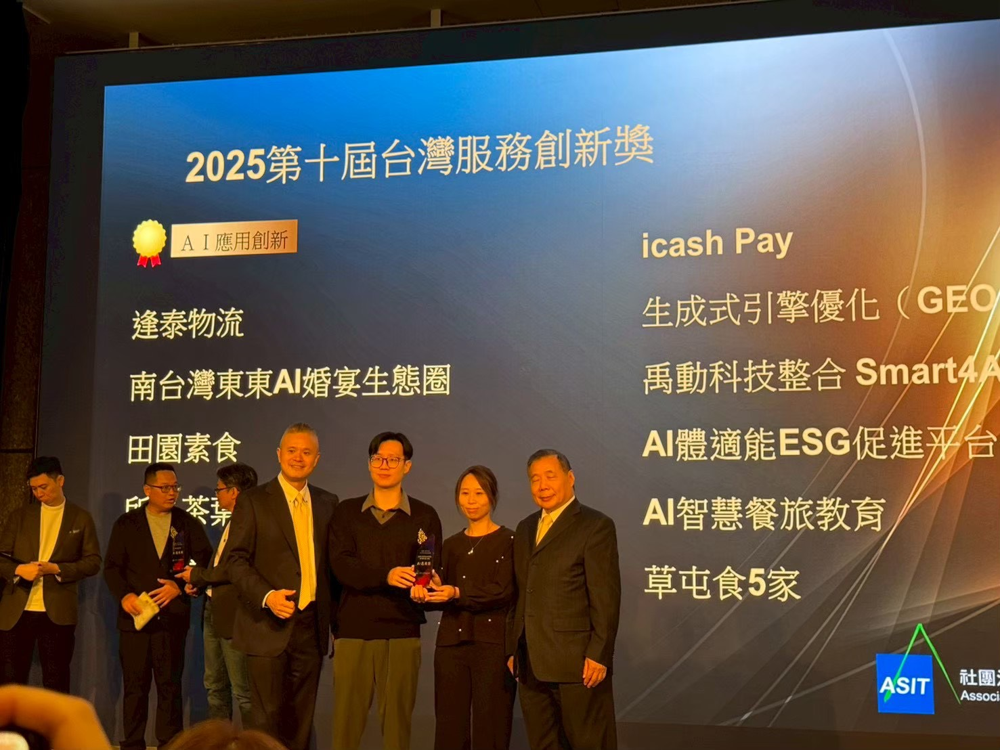
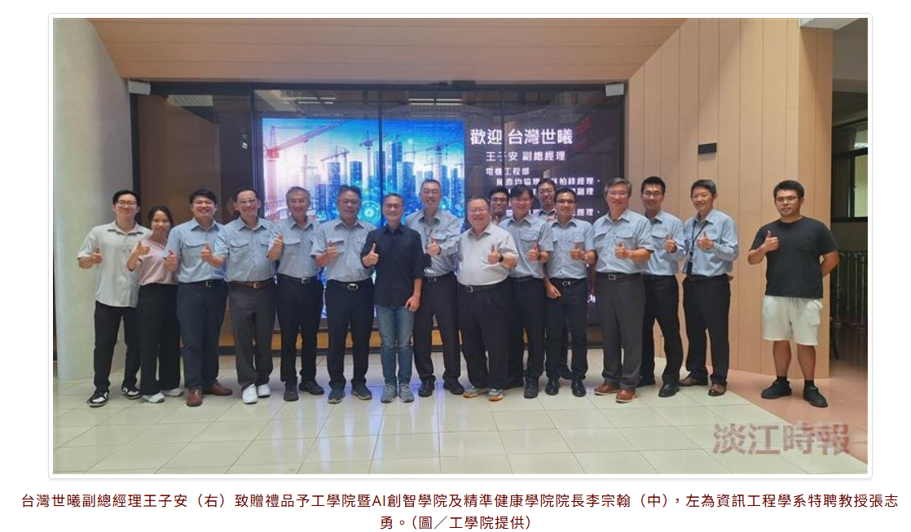
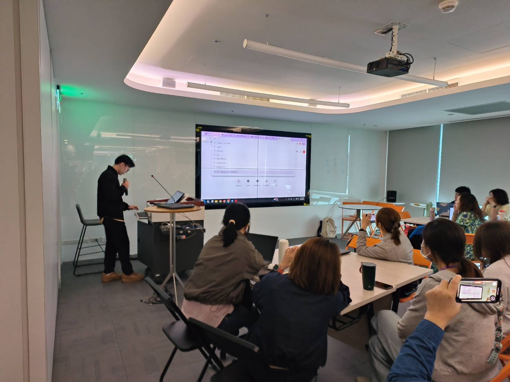
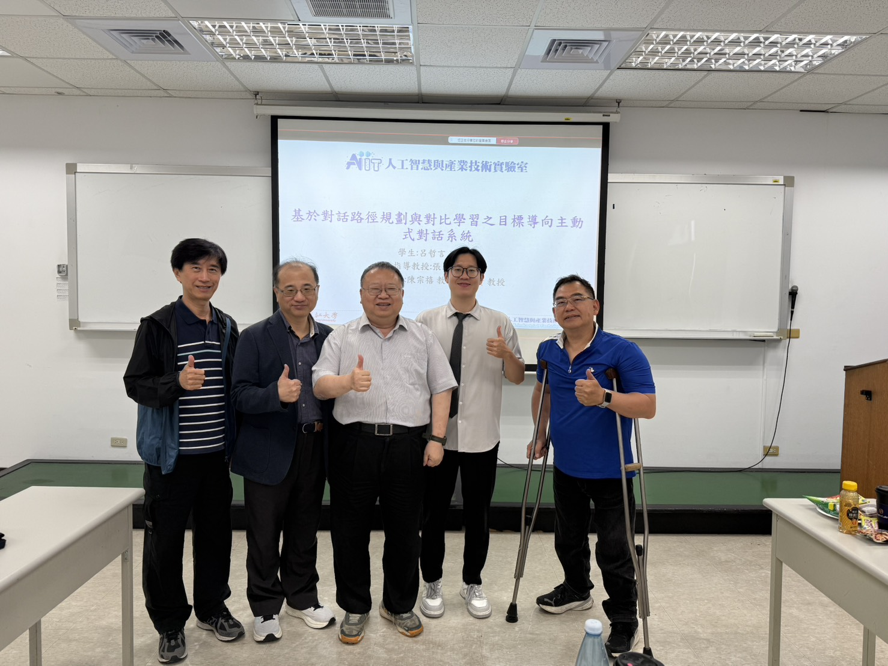

LLM / RAG 系統
把企業文件、商家資料、旅遊手冊與知識庫轉成可查詢、可追溯的 AI 問答服務。
把模型、資料、API 與場域流程串成可以展示、可以驗證、可以交付的應用。
把企業文件、商家資料、旅遊手冊與知識庫轉成可查詢、可追溯的 AI 問答服務。
設計具意圖判斷、工具調用、短期記憶與任務流程的多代理應用。
整合文字、語音、圖片與影片資料，支援旅遊、醫療、教育與商家推薦場景。
參與企業合作、競賽獲獎、醫療工作坊與半導體 AI 課程，能將 AI 技術轉成場域可用流程。
熟悉 LLM、RAG、Agent、後端整合與多模態應用，能從資料處理一路接到可展示的系統流程。
代表作品涵蓋商家推薦、旅遊問答、企業客服與會議秘書，重點在模型、資料庫、API 與場域流程整合。
把 ESGPB 商家資料、優惠查詢、虛擬人互動、語音與圖片輸入串成可展示的 AI 導購流程。
將旅遊手冊、景點資料、語音與圖片輸入整理成可問答的行程助理，支援旅前查詢、團體導覽與旅後偏好分析。
針對企業客服常見的幻覺、API 成本與回答風格不一致，設計知識檢索、歷史問答重用與風格微調流程。
讓會議從會前資料整理、會中紀錄到會後任務追蹤形成流程，將逐字稿轉成摘要、待辦與提醒。
每個案例用一整列呈現圖片、場域問題、系統流程與可追問的技術細節，讓面試官能快速看懂你實際做過什麼。


ESGPB 有商家、優惠、影片與分類資料，但一般使用者不一定知道該怎麼搜尋。這個案例把「找優惠、找店家、問推薦」改成可用自然語言、語音與圖片互動的推薦流程。
後端以 FastAPI 提供串流 API，商家資料同時查詢 ESGPB Stores API 與 Qdrant 向量資料庫。Qdrant 使用 OpenAI text-embedding-3-small 建立語意向量，並與 API 查詢結果合併、去重、排序。
回覆採串流輸出，除了推薦文字，也能回傳語音、影片連結與商家推薦理由。這讓網站右下角的虛擬人不只是聊天視窗，而是可以接到商家資料與推薦流程的導購介面。
目前網站放入 ESGPB 實作截圖與架構圖，可對應到好奇兄弟雲端股份有限公司合作專案；右下角助理支援語言選擇、對話與商家優惠推薦入口。

旅行社手冊、景點介紹、行程表與售價資訊常分散在不同文件，旅客臨時提問時，導遊需要反覆查資料；旅後回饋也容易散落在聊天紀錄中，難以整理成下一次行程規劃的依據。
以 Unstructured.io 與 Detectron2 拆解旅遊手冊中的文字、表格與圖片，再整理成知識圖譜與向量資料庫。Neo4j 用於景點、行程與關係查詢，Qdrant 用於語意檢索，Redis / PostgreSQL 保存對話狀態與偏好。
系統支援 LINE Bot 入口，搭配 Whisper 處理語音問題，BLIP-2 / Video-LLaMA 解析圖片與影片線索，並可透過即時搜尋補足每日變動的旅遊資訊。
作品全名為「具意圖探測的多模態旅遊問答服務系統」，獲 2025 InnoServe 商業發展治理創新組第三名。下方可直接預覽完整簡報，方便面試時查看系統情境、架構與展示流程。

企業客服導入 LLM 時，常遇到三個問題：回答內容可能幻覺、外部 API 成本不穩定、回答語氣不符合產業或品牌風格。這個專案以 Llama / TAIDE 為例，設計可控的知識問答流程。
檢索端結合 BM25、Embedding 與 Cross-Similarity Retrieval，讓問題能先對齊企業知識與歷史高品質問答；若已有相似答案，優先重用並降低重複呼叫模型的成本。
模型端透過 LoRA 微調 Llama / TAIDE，使回覆更接近需求單位的客服語氣與產業用語；同時搭配 QA Scoring 檢查回答品質，避免只靠單次生成決定最終答案。
作品全名為「以 Llama 為例解決 LLM 幻覺問題、節省成本及特殊風格調整」，獲 2024 年度 AI 應用鬥智賽佳作，並保留完整提案文件供下載。

會議資料常分散在 LINE、Email、雲端文件與過往決議中；會議中若只留下逐字稿，後續仍要人工整理重點、責任分派與提醒，導致會後追蹤斷掉。
會前彙整歷史資料與議程，會中以 Whisper 轉錄並搭配 ECAPA-TDNN / Spectral Clustering 做語者分離，會後輸出摘要、任務清單與追蹤提醒。
以 Sentence-BERT、HDBSCAN、TextRank 與 NER 抽取主題、重點與行動項目，再透過 n8n、Webhook 與 Multi-Agent 串接 LINE、Email、Calendar 等通知流程。
展示影片已嵌入下方，可看到從語音轉錄、摘要生成到任務追蹤的流程；此作品也作為 2025 第十屆台灣服務創新獎相關成果的一部分呈現。

對應「委託應用AI建構鐵道專業服務及巡檢數位轉型建置之規劃、基本設計、細部設計審查、監督審驗(含鐵道領域專業顧問)技術服務」。重點是把鐵道專業文件、巡檢資料、工程管理與審查流程整理成可建置、可審查、可驗收的 AI 系統規劃。
文件規劃包含鐵道專用交談式專家介面、鐵道知識庫、雲端大型語言模型與既有鐵道雲資料庫匯流排。模組涵蓋鐵道規範及業務資料上傳、工程施工管理、巡檢應用、審查與技術規範查詢。
鐵道專有名詞、法規條文與巡檢情境不能只靠單一向量檢索。規劃採問題分類器先辨識查詢類型，再依問題性質分配 BM25、RAG、知識圖譜或混合檢索，並要求回答能回到來源文件，讓答案可追溯。
文件也整理影像辨識與多模態模型選用，例如 CLIP、SAM、BLIP、LLaVA 等，用於巡檢影像、空拍照片、影片與文字描述的共同理解。應用情境包含軌道缺陷、設備故障、異物入侵、淨空區間與施工風險提示。
這個案例的價值在於把 AI 技術從「模型名稱」轉成工程標案能審查的內容：需求範圍、系統模組、資料庫選型、檢索策略、多模態巡檢、驗收指標與交付文件。面試時可延伸討論 RAG、BM25、知識圖譜、影像辨識與 AI 系統驗收設計。
展示語音辨識、會議摘要、任務抽取與後續追蹤流程。
以下列出完整計畫與標案名稱，方便面試官對照你的研究室、產學合作與實際場域經驗。
榮總 AI 醫療工作坊面向專科護理師，示範如何用生成式 AI 輔助預立醫療流程與紀錄撰寫；陽明交通大學「半導體 AI 與 ChatGPT 應用班」則對應產業學員的 AI 工具應用與導入教學。
協助台灣世曦工程整理鐵道 AI 與智慧工程標案內容，將需求拆成可執行的技術服務範圍：鐵道巡檢數位轉型、工程文件知識查詢、影像辨識、AI 對話系統、專業顧問支援、基本設計與細部設計審查，以及監督審驗流程。
這個案例重點不是單一模型展示，而是把工程顧問、鐵道專業知識、巡檢流程與 AI 系統建置放在同一份技術服務規劃中，讓後續審查與交付能被追蹤。
碩士論文方向為開放域目標導向主動對話，熟悉資料處理、模型訓練、偏好優化與錯誤分析。
公開獎狀、合作截圖與現場照片可對應到上方代表作品與實際參與紀錄。
商業發展治理創新組第三名，作品為具意圖探測的多模態旅遊問答服務系統。
Deep龍力團隊，以 Llama 為例處理幻覺、成本與企業風格需求。
代表 AIIT 淡江大學人工智慧與產業技術實驗室上台領獎。
右下角虛擬人小視窗支援語言選擇、對話與商家優惠推薦。

面向專科護理師，示範生成式 AI 輔助預立醫療流程與紀錄撰寫。
世曦工程拜訪淡江 AI 創智場域，對應鐵道 AI 與巡檢數位轉型交流。
研究室是我累積 AI 研究、產學合作與跨域系統實作經驗的主要場域。
AIIT 人工智慧與產業技術實驗室以 AI 技術研發與產業應用為核心，研究領域涵蓋機器學習、深度學習、影像處理與自然語言處理。
研究室長期推動 AI 技術落地，與產業方進行人工智慧產學合作，協助智慧化轉型，也訓練學生把模型、資料、系統與場域需求整合成可展示、可討論的成果。

想討論 AI / LLM / RAG 工程職缺或產學合作，可透過 Email 聯絡。
david891205.github.io/resume-site
Location：Taiwan｜雙北 / 桃園可配合